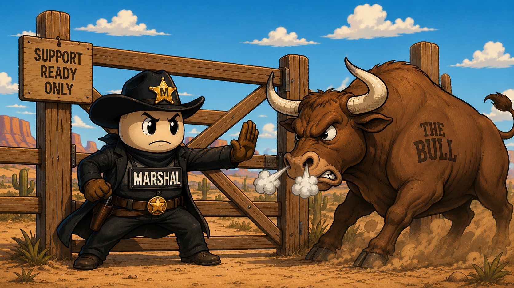

It reviews a finished smart-home site doc and decides whether support can actually service the client from what is written.
It clears the doc, or sends it back to the tech who owns the gap. It never invents a value, never rubber-stamps to be agreeable, and never lands the rework on you.

Every install ends with a site document, then it gets handed to support. Half of them come back over half-filled, and confirming that lands on one overloaded desk. If that person is fixing every doc, they may as well be filling them out. Marshal is the gate that replaces them.
The judgment is real, but it does not scale and it burns out the one person who can do it.
It applies the same judgment every time, clears what is service-ready, and sends the rest back with a precise punch list.
A required-fields form catches blanks. It cannot tell whether what is written can actually service the system.
No app to install, no model to fine-tune. Marshal is interpretable context: each file does one job, and the only domain-specific layer is one folder you swap. Drop it into any AI assistant and it runs.
rules.md holds the order of operations, the three verdicts, and the escalation rules. You keep it as is.
reference/ is the only domain layer. Copy _template/, fill in the items, the must-have fields, and your front door. PATTERN.md shows the handoffs it fits, from field-service closeouts to loan underwriting to clinical intake.
Every present system is documented to service, with any support advisories attached so tier-1 is not surprised.
Exactly what is missing, addressed to the submitting tech. The rework goes back to whoever owns the gap.
The rare judgment that belongs to the production manager, routed up instead of guessed at.
Techs mark up the rack and closet shots. Marshal reads them, pins the exact gear the form left generic (the processor model behind "Crestron," the named switch behind "UniFi"), and catches anything installed but never written down. The form can be vague. The photo is not.
Drop the marshal folder into a Claude project, or paste its files in as context.
Paste sample-run/sample-site-doc.md and ask: "Run Marshal on this doc."
You get RETURN with a punch list. Paste the corrected doc and watch it ACCEPT cleanly. The gate runs both directions.
This is not a demo built for a contest. It is the working logic for a beta heading to a real industry support partner, scoped and stress-tested cold. The contest just set the deadline.